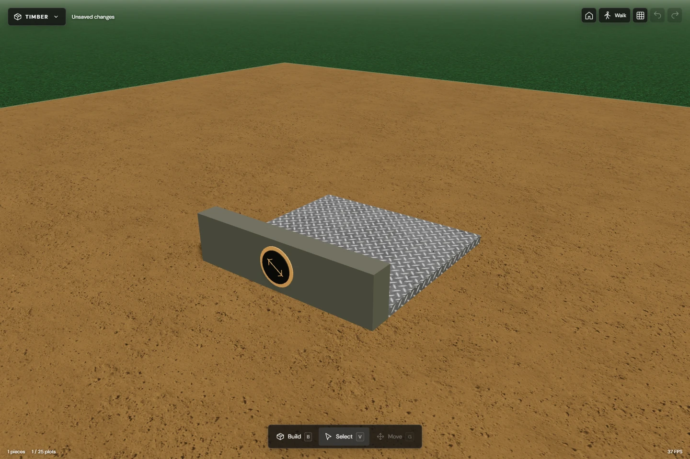
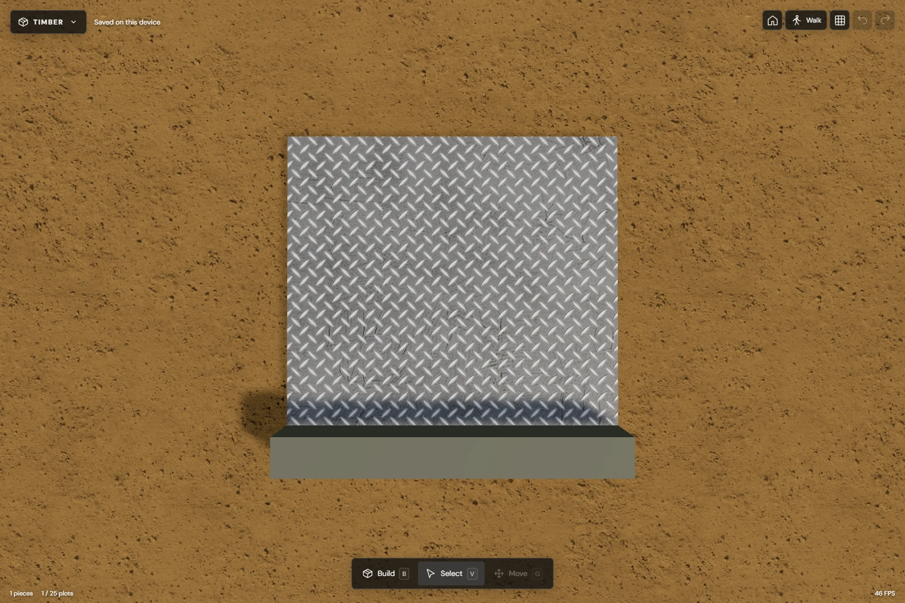
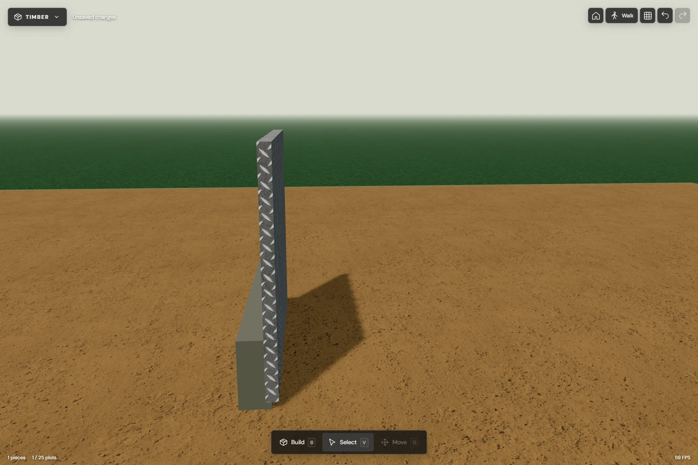
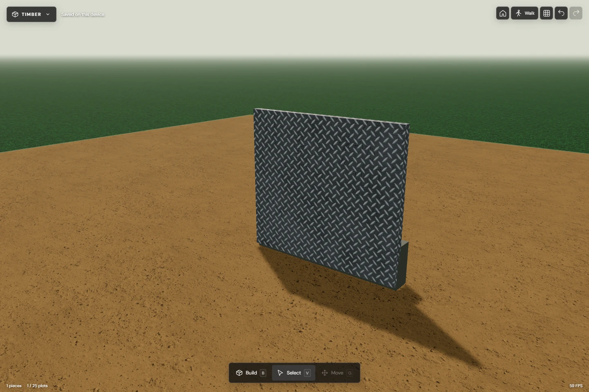
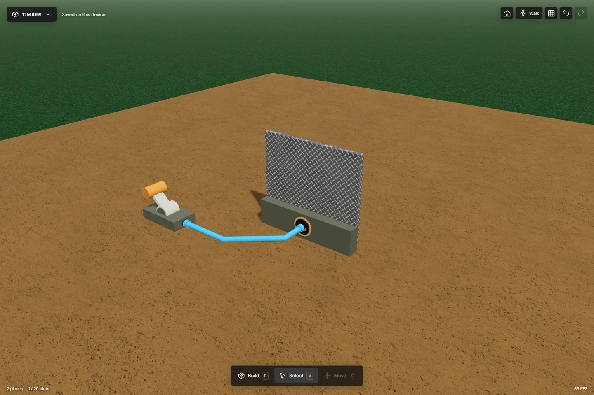
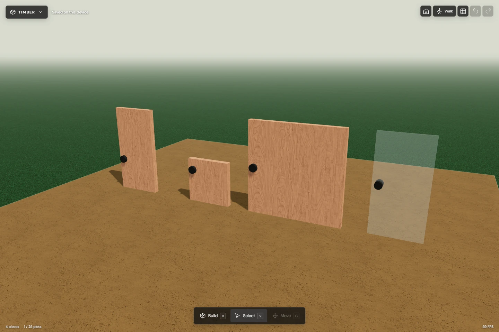
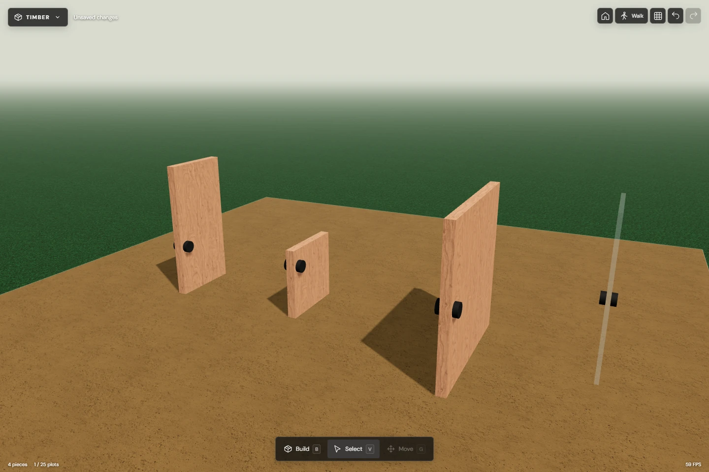
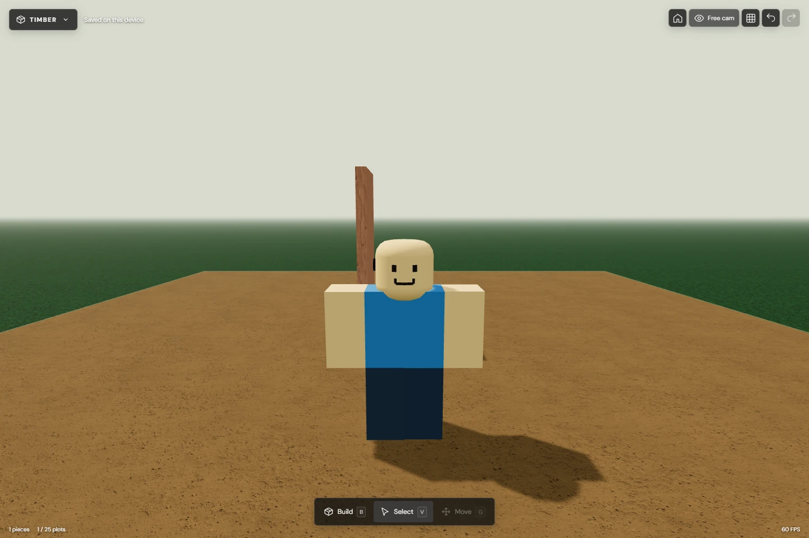

Hatches and doors
Eight screenshots from the simulator: closed and open designs, the upward-opening hatch, a wired assembly, and a walking interaction. Select any image to open it full size.
The hatch was compared with the game reference. Its panel sits near the bottom of the motor bar and swings upward. Fine hinge measurements and motion timing remain reconstructions; these screenshots are not a claim of exact Roblox physics parity.
Closed hatch: motor bar and low-mounted plate


Closed hatch: footprint and diamond plate


Open hatch: upward swing from the fixed bar


Open hatch: rear three-quarter view


Wired hatch: powered by a lever


Basic, Half, Fat and Glass Doors: closed


Basic, Half, Fat and Glass Doors: open


Walking through the open doorway
